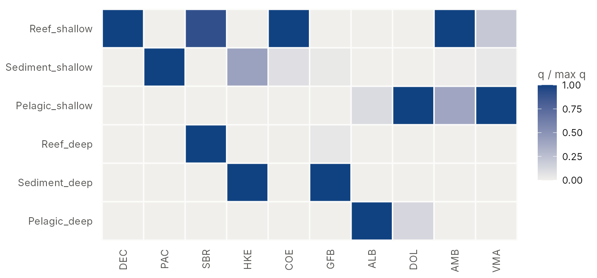
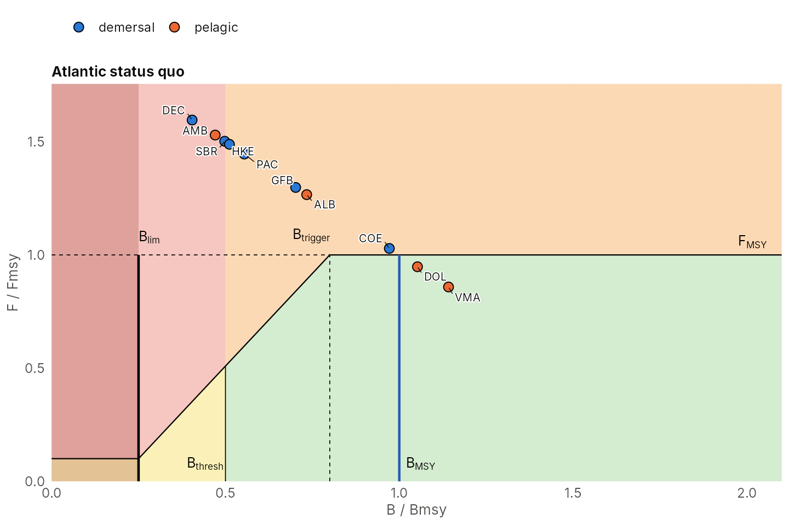
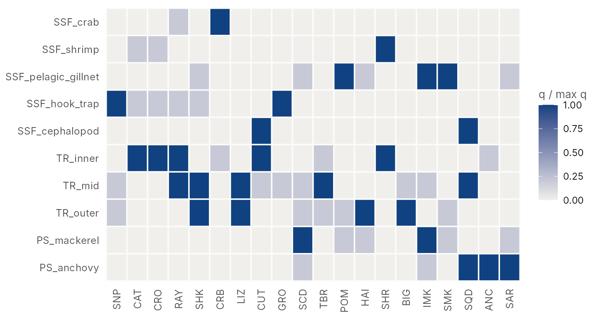
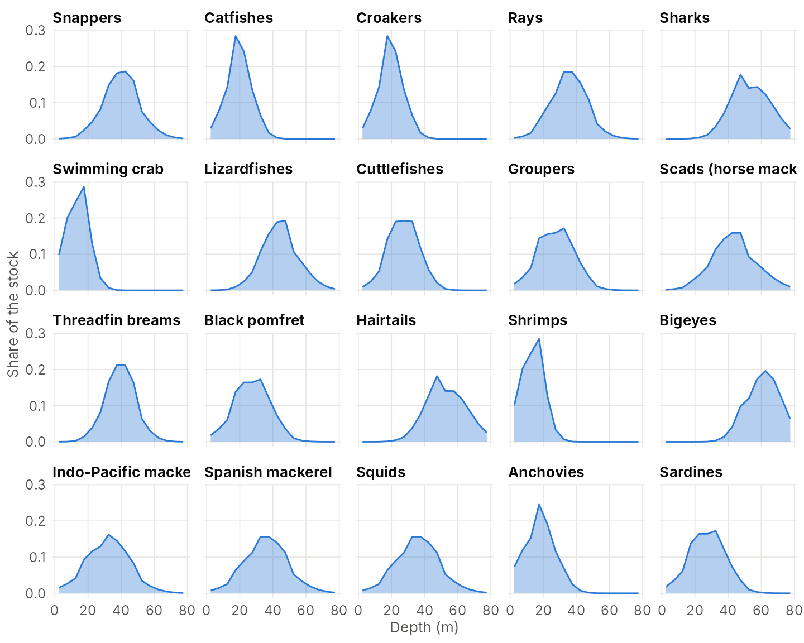
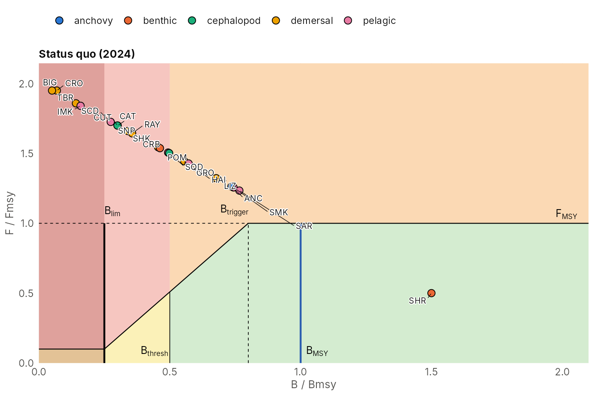

Setting up the case studies: Atlantic and Gulf of Thailand
Source:vignettes/scenario-setup.Rmd
scenario-setup.RmdThis vignette documents how the two example systems of the package
were built and tuned, as a guideline for setting up your own: the input
tables, how catchability was derived, the fleet settings that shape
behaviour, and the calibration of the starting point. Part A covers the
Atlantic example (atlantic_system()), Part B the Gulf of
Thailand draft (got_system_draft()), and Part C summarises
the steps as a checklist. The model itself is described in
vignette("how-it-works"), and the analysis functions in
vignette("mmsyFM").
library(mmsyFM)
library(ggplot2)
ext <- function(f) read.csv(system.file("extdata", f, package = "mmsyFM"), check.names = FALSE)Part A: the Atlantic example
A generic north-east Atlantic mixed hook-and-line fishery with ten stocks: six demersal (from reef fish to hake) and four pelagic (two of them seasonal migrants). It is a conceptual system for exploring mixed-fishery management, not an assessment of real stocks.
A1. Stocks
ext("atlantic_species.csv")
#> species code group r K price season_amp season_peak
#> 1 Dentex dentex DEC demersal 0.25 500 12 0.0 1
#> 2 Pagellus erythrinus PAC demersal 0.35 900 8 0.0 1
#> 3 Pagellus bogaraveo SBR demersal 0.18 800 15 0.0 1
#> 4 Merluccius merluccius HKE demersal 0.30 2500 5 0.0 1
#> 5 Conger conger COE demersal 0.30 600 3 0.0 1
#> 6 Phycis blennoides GFB demersal 0.30 700 2 0.0 1
#> 7 Thunnus alalunga ALB pelagic 0.40 3000 6 0.7 9
#> 8 Coryphaena hippurus DOL pelagic 0.80 1500 7 0.9 9
#> 9 Seriola dumerili AMB pelagic 0.35 600 9 0.4 8
#> 10 Scomber colias VMA pelagic 0.80 4000 2 0.3 5Growth rates (r), carrying capacities (K)
and relative prices are indicative. Pelagic stocks have seasonal
availability (season_amp, peak month
season_peak), so their catch rates vary through the
year.
A2. Metiers and catchability: from a habitat landscape
The metiers are three tactics (reef handline, sediment longline, pelagic troll) on two grounds (shallow and deep, split at 300 m), i.e. six metiers. Their catchability was derived once from the spatial multispecies simulator of the cpueTargeting package, which re-implements the simulator of Thorson et al. (2017), itself generalising Ono et al. (2015):
- a habitat landscape of depth, reef patches and sea-surface temperature on a grid; each species has a depth, substrate (reef or sediment) and, for pelagics, temperature preference, giving its spatial distribution at K;
- each metier fishes the cells of its ground (shallow or deep, reef or sediment, or the water column for the troll) with a gear selectivity for each species;
- catchability = selectivity x the mean share of the stock’s K per cell of the ground, with fishing spread evenly over the ground.
Two settings were changed from the logbook simulator to give a
balanced system: the selectivity of the pelagic troll for Seriola
dumerili was lowered from 0.8 to 0.4 (with 0.8, the reef and troll
by-catch drove it down under open access), and mixed vessels fish at
0.75 of the specialists’ efficiency. The resulting matrix is stored as a
table, so the package does not depend on cpueTargeting;
ms_landscape() (Part B) is the stand-alone equivalent of
this step.
sys_a <- atlantic_system()
plot_catchability(sys_a)
Dentex dentex lives on a narrow reef habitat and has the highest catchability relative to its growth rate: it becomes the choke stock.
A3. Fleet segments
ext("atlantic_segments.csv")
#> segment share_target loyalty efficiency cost_multiplier vessel_cv
#> 1 demersal 0.35 0.8 1.00 0.6340 0.25
#> 2 pelagic 0.35 0.8 1.00 1.0774 0.25
#> 3 mixed 0.30 0.0 0.75 0.8434 0.25
#> home
#> 1 Reef_shallow;Sediment_shallow;Reef_deep;Sediment_deep
#> 2 Pelagic_shallow;Pelagic_deep
#> 3 Reef_shallow;Sediment_shallow;Pelagic_shallow;Reef_deep;Sediment_deep;Pelagic_deep- Demersal and pelagic specialists fish 80% of their days on their home metiers (loyalty 0.8) and the rest wherever it pays best.
- The mixed segment is a generalist (loyalty 0) at 0.75 efficiency.
- Each metier’s daily cost is 0.4 of its unfished revenue rate
(
costin the metier table); the segment multipliers (cost_multiplier) are tuned. -
vessel_cv = 0.25: vessel efficiency varies within a segment, so some vessels break even while others stay in port.
A4. Tuning the status quo
The daily cost multipliers were solved with ms_tune() so
that the open-access equilibrium (capacity 1,000 days per segment,
gamma = 1.5) has 35 / 35 / 30% of the days by segment and
the weakest stock at 0.4 Bmsy:
sys_a <- ms_tune(sys_a, shares = c(demersal = 0.35, pelagic = 0.35, mixed = 0.30),
status = c(min = 0.4), cap = 1000, gamma = 1.5)The stored system is the result:
sq_a <- ms_status_quo(sys_a, capacity = 1000, gamma = 1.5, years = 300)
round(sq_a$E_seg / sum(sq_a$E_seg), 2)
#> demersal pelagic mixed
#> 0.36 0.34 0.30
round(sort(sq_a$BBmsy), 2)
#> Dentex dentex Seriola dumerili Pagellus bogaraveo
#> 0.40 0.47 0.50
#> Merluccius merluccius Pagellus erythrinus Phycis blennoides
#> 0.51 0.55 0.70
#> Thunnus alalunga Conger conger Coryphaena hippurus
#> 0.73 0.97 1.05
#> Scomber colias
#> 1.14
At the status quo Dentex, blackspot seabream and Seriola are the most depleted stocks (about 0.4-0.5 Bmsy), while the fast pelagics are above Bmsy.
Part B: the Gulf of Thailand draft
The Gulf of Thailand system represents the multispecies trawl, purse-seine and small-scale fisheries of the Gulf with the 18 species groups of the multispecies MSY app (mmsyapp), plus anchovies and sardines. It shows how a system is calibrated to the observed status of the stocks.
The Gulf of Thailand system is a draft. Prices, gear overlaps, habitat preferences and costs are indicative; the 2024 depletions are those of the multispecies MSY app (mmsyapp).
B1. The four tables
A system is built by ms_system() from four tables (or
read from CSV files with read_ms_system()).
Species
One row per stock: growth rate r, carrying capacity
K and a relative price; optionally
seasonality, the F cap and the starting depletion.
species <- ext("got_species.csv")
species[, c("species", "code", "group", "r", "K", "price", "F_cap", "dep_init", "dep_2024")]
#> species code group r K price F_cap
#> 1 Snappers SNP demersal 0.04950501 194126.69 6.0 1.95
#> 2 Catfishes CAT demersal 0.05017967 195614.21 2.0 1.95
#> 3 Croakers CRO demersal 0.05036881 647838.12 1.5 1.95
#> 4 Rays RAY demersal 0.06395467 232757.01 1.5 1.95
#> 5 Sharks SHK demersal 0.05732474 132829.20 2.0 1.95
#> 6 Swimming crab CRB benthic 0.35931673 202741.16 8.0 1.95
#> 7 Lizardfishes LIZ demersal 0.38499380 109345.96 1.2 1.95
#> 8 Cuttlefishes CUT cephalopod 0.52284449 149444.43 5.0 1.95
#> 9 Groupers GRO demersal 0.18180063 61519.10 10.0 1.95
#> 10 Scads (horse mackerels) SCD pelagic 0.17354501 912968.71 1.5 1.95
#> 11 Threadfin breams TBR demersal 0.18419943 657875.95 2.0 1.95
#> 12 Black pomfret POM pelagic 0.21435880 36399.87 8.0 1.95
#> 13 Hairtails HAI pelagic 0.21439199 59185.71 3.0 1.95
#> 14 Shrimps SHR benthic 1.43877344 548802.35 10.0 1.95
#> 15 Bigeyes BIG demersal 0.23928674 249308.65 1.2 1.95
#> 16 Indo-Pacific mackerel IMK pelagic 0.32530656 237056.62 2.5 1.95
#> 17 Spanish mackerel SMK pelagic 0.40113973 553338.85 6.0 1.95
#> 18 Squids SQD cephalopod 0.65758769 262876.70 6.0 1.95
#> 19 Anchovies ANC anchovy 1.20000000 575000.00 1.0 1.95
#> 20 Sardines SAR pelagic 1.00000000 400000.00 0.8 1.95
#> dep_init dep_2024
#> 1 0.1696 0.166
#> 2 0.1509 0.151
#> 3 0.0411 0.058
#> 4 0.1781 0.178
#> 5 0.2276 0.227
#> 6 0.2312 0.231
#> 7 0.3386 0.338
#> 8 0.1499 0.150
#> 9 0.2776 0.273
#> 10 0.1372 0.136
#> 11 0.0708 0.070
#> 12 0.2467 0.247
#> 13 0.2858 0.286
#> 14 0.7499 0.974
#> 15 0.0255 0.028
#> 16 0.0796 0.078
#> 17 0.3717 0.372
#> 18 0.2489 0.248
#> 19 0.3679 NA
#> 20 0.3829 NA-
randKare the 18 mmsyapp groups; anchovies and sardines were added. -
F_cap = 1.95(units of Fmsy) is the persistence floor: no stock settles below 0.05 Bmsy (vignette("how-it-works"), section 2). -
dep_2024is the mmsyapp 2024 depletion (B/K), the target of the calibration in section B4;dep_initis the starting depletion of simulations, written by that calibration.
Metiers and segments
ext("got_metiers.csv")[, c("metier", "tactic", "ground")]
#> metier tactic ground
#> 1 SSF_crab Crab gillnet and trap coastal
#> 2 SSF_shrimp Shrimp trammel and gillnet coastal
#> 3 SSF_pelagic_gillnet Encircling and drift gillnet coastal
#> 4 SSF_hook_trap Hook and line, fish trap coastal
#> 5 SSF_cephalopod Cephalopod trap and jig coastal
#> 6 TR_inner Trawl inner shelf (15-30 m, mud) offshore
#> 7 TR_mid Trawl mid shelf (30-50 m) offshore
#> 8 TR_outer Trawl outer shelf (50-80 m, sand) offshore
#> 9 PS_mackerel Mackerel/scad purse seine offshore
#> 10 PS_anchovy Light-luring anchovy/small-pelagic purse seine offshore
segments <- ext("got_segments.csv")
segments
#> segment share_target loyalty efficiency cost_multiplier vessel_cv
#> 1 trawl 0.12 1 1.000 0.1815 0.25
#> 2 purse_seine 0.06 1 1.000 0.2931 0.25
#> 3 small_scale 0.82 1 0.075 0.0265 0.25
#> home capacity
#> 1 TR_inner;TR_mid;TR_outer 450
#> 2 PS_mackerel;PS_anchovy 225
#> 3 SSF_crab;SSF_shrimp;SSF_pelagic_gillnet;SSF_hook_trap;SSF_cephalopod 3000Three segments with coastal zoning (loyalty 1: a segment fishes only its own metiers):
- trawl: inner (15-30 m, mud), mid (30-50 m) and outer shelf (50-80 m);
- purse seine: a mackerel/scad seine and a light-luring anchovy seine;
- small-scale fisheries (SSF): five coastal tactics. SSF is the generalist, switching between tactics by profit, with a low efficiency (0.075 of an industrial vessel-day) and a matching low daily cost, and it fishes 82% of the days.
capacity is the registered days of each segment;
share_target the share of days the calibration aims at.
B2. Catchability
The catchability matrix (metiers x stocks) says which metiers catch which stocks and how strongly. There are two ways to build it.
Route A: an expert overlap matrix
Score each metier-stock pair as main fishery (1), by-catch (0.2) or none (0), and scale by r (so a day has a similar F/Fmsy effect on every stock). This is how the draft was started; the stored matrix is that start after calibration (section B4):
sys <- got_system_draft()
plot_catchability(sys)
Route B: a habitat landscape
ms_landscape() derives catchability from where stocks
live and where and how metiers fish:
- seabed cells with depth, substrate and area;
- habitat preferences of each stock: a depth preference (mean, SD) and substrate weights;
- grounds of each metier: a depth range and substrates;
- gear selectivity of each metier for each stock.
cells <- ext("got_cells.csv")
habitat <- ext("got_habitat.csv")
grounds <- ext("got_grounds.csv")
sel <- ext("got_selectivity.csv")
head(habitat)
#> species depth_mean depth_sd mud sand hard
#> 1 Snappers 40 12 0.2 0.6 1.0
#> 2 Catfishes 18 8 1.0 0.4 0.1
#> 3 Croakers 18 8 1.0 0.4 0.1
#> 4 Rays 35 12 1.0 0.8 0.2
#> 5 Sharks 55 12 0.4 1.0 0.4
#> 6 Swimming crab 12 7 1.0 0.8 0.2
grounds
#> metier depth_min depth_max substrate
#> 1 SSF_crab 0 15 mud;sand
#> 2 SSF_shrimp 0 15 mud;sand
#> 3 SSF_pelagic_gillnet 0 15
#> 4 SSF_hook_trap 0 15 hard;sand
#> 5 SSF_cephalopod 0 15
#> 6 TR_inner 15 30 mud;sand
#> 7 TR_mid 30 50 mud;sand
#> 8 TR_outer 50 80 mud;sand
#> 9 PS_mackerel 20 80
#> 10 PS_anchovy 5 40The catchability is q0 x selectivity x the stock’s
density on the ground relative to its average density:
Q_land <- ms_landscape(cells, habitat, grounds, sel)
plot_landscape(Q_land, cells)
Each stock’s distribution over depth. Comparing the shape of each stock’s column (relative to its maximum) with the expert matrix:
nrm <- function(m) { m <- unclass(m); attributes(m) <- attributes(m)[c("dim", "dimnames")]
sweep(m, 2, apply(m, 2, max), "/") }
L <- nrm(Q_land); E <- nrm(sys$Q[rownames(L), ])
round(cor(as.vector(L), as.vector(E)), 2)
#> [1] 0.76The landscape route is easier to defend and to change (e.g. a stock that moves deeper, a trawl ban inside 15 m), and it spreads catchability smoothly across grounds where the expert matrix has only 1, 0.2 and 0. Either way, the level of each stock’s catchability column is set by the calibration to the stock’s status; the matrix provides its shape.
To build a system from the landscape, pass it as the catchability:
sys_land <- ms_system(species, ext("got_metiers.csv")[, c("metier", "tactic", "ground")],
Q_land, segments)
sys_land
#> <ms_system> 20 stocks, 10 metiers, 3 segments
#> stocks: SNP, CAT, CRO, RAY, SHK, CRB, LIZ, CUT, GRO, SCD, TBR, POM, HAI, SHR, BIG, IMK, SMK, SQD, ANC, SAR
#> metiers: SSF_crab, SSF_shrimp, SSF_pelagic_gillnet, SSF_hook_trap, SSF_cephalopod, TR_inner, TR_mid, TR_outer, PS_mackerel, PS_anchovy
#> segment trawl loyalty 1.00, efficiency 1.00, daily cost x0.181, home: TR_inner, TR_mid, TR_outer
#> segment purse_seine loyalty 1.00, efficiency 1.00, daily cost x0.293, home: PS_mackerel, PS_anchovy
#> segment small_scale loyalty 1.00, efficiency 0.07, daily cost x0.026, home: SSF_crab, SSF_shrimp, SSF_pelagic_gillnet, SSF_hook_trap, SSF_cephalopod
#> F cap: 1.95 x Fmsy(Without a cost column, each metier’s daily cost is 0.4
of its unfished revenue rate.)
B3. Fleet behaviour
Two settings shape how the fleet responds:
-
Profit preference
gamma(“how strongly fishers chase profit”): each segment spreads its days over its metiers in proportion to expected profit per day raised togamma. 0 = profit-blind; 1.5 = a metier paying twice the profit gets 74% of the days. - Capacity: the registered days; the days actually fished are those of the vessels that break even.
The effect of gamma on where the days go at the status
quo:
cap <- c(trawl = 450, purse_seine = 225, small_scale = 3000)
days_by_metier <- function(g) {
x <- ms_simulate(sys, matrix(cap, 1), 200, capacity = matrix(cap, 1), gamma = g, avg_years = 20)
round(colMeans(x$E_metier[, 1, ]))
}
d <- sapply(c(0, 1.5, 3), days_by_metier)
dimnames(d) <- list(sys$metiers$name, paste("gamma", c(0, 1.5, 3)))
d
#> gamma 0 gamma 1.5 gamma 3
#> SSF_crab 597 104 16
#> SSF_shrimp 597 1659 1774
#> SSF_pelagic_gillnet 597 1038 1043
#> SSF_hook_trap 597 159 159
#> SSF_cephalopod 597 41 8
#> TR_inner 150 361 384
#> TR_mid 150 54 41
#> TR_outer 150 35 25
#> PS_mackerel 99 95 95
#> PS_anchovy 99 124 127With gamma = 0 every metier of a segment gets the same
days; with a strong preference, small-scale effort concentrates on the
shrimp and pelagic gillnet tactics, and trawl on the inner shelf.
B4. Calibrating the starting point
The calibration fixes what is not directly known (daily costs, the
level of each stock’s catchability) so that the open-access equilibrium
reproduces what is known: the fleet composition and the status of the
stocks. It runs once per scenario; the steps take 1-2 minutes each, so
they are shown here without running, and the results are those stored in
got_system_draft().
Step 1: daily costs. ms_tune() solves
each segment’s daily cost multiplier so that the open-access equilibrium
has the target shares of days (12 / 6 / 82%) and a target status (here:
the weakest stock at the 0.05 Bmsy floor):
Step 2: stock status. ms_condition()
rescales each stock’s catchability until its B/Bmsy matches the 2024
depletion (limited to 0.05-1.5 Bmsy; anchovies and sardines have no
value and are left free), keeping the shares of days with the total days
fixed:
target <- setNames(2 * species$dep_2024, species$species) # B/Bmsy = 2 B/K
target <- target[!is.na(target)]
sys2 <- ms_condition(sys1, target, cap = cap, gamma = 1.5)
attr(sys2, "conditioning") # targets, achieved B/Bmsy and F/Fmsy, q multipliersStep 3: save the tables
(write_ms_system(sys2, "my_folder", "got")), so the
scenario can be reloaded with read_ms_system() or uploaded
in the app.
Checking the result
The stored draft went through these steps (from the expert matrix). Its status quo against the 2024 targets:
sq <- ms_status_quo(sys, capacity = cap, gamma = 1.5, years = 300)
round(sq$E_seg / sum(sq$E_seg), 3) # shares of days
#> trawl purse_seine small_scale
#> 0.123 0.060 0.818
chk <- data.frame(stock = sys$code, target = pmin(pmax(2 * species$dep_2024, 0.05), 1.5),
BBmsy = round(sq$BBmsy, 2), FFmsy = round(sq$FFmsy, 2))
chk
#> stock target BBmsy FFmsy
#> Snappers SNP 0.332 0.34 1.66
#> Catfishes CAT 0.302 0.30 1.70
#> Croakers CRO 0.116 0.07 1.95
#> Rays RAY 0.356 0.36 1.64
#> Sharks SHK 0.454 0.46 1.54
#> Swimming crab CRB 0.462 0.46 1.54
#> Lizardfishes LIZ 0.676 0.68 1.32
#> Cuttlefishes CUT 0.300 0.30 1.70
#> Groupers GRO 0.546 0.56 1.44
#> Scads (horse mackerels) SCD 0.272 0.27 1.73
#> Threadfin breams TBR 0.140 0.14 1.86
#> Black pomfret POM 0.494 0.49 1.51
#> Hairtails HAI 0.572 0.57 1.43
#> Shrimps SHR 1.500 1.50 0.50
#> Bigeyes BIG 0.056 0.05 1.95
#> Indo-Pacific mackerel IMK 0.156 0.16 1.84
#> Spanish mackerel SMK 0.744 0.74 1.26
#> Squids SQD 0.496 0.50 1.50
#> Anchovies ANC NA 0.74 1.26
#> Sardines SAR NA 0.77 1.23All stocks with a 2024 value are within about 0.01 B/Bmsy of it, except croakers, which sit at the F cap (0.07 for a target of 0.12). Shrimp is held at the 1.5 limit (mmsyapp has 0.97 B/K).

Every stock lies on the line B/Bmsy + F/Fmsy = 2 (the Schaefer equilibrium). Also check that every metier is fished (days by metier at the status quo):
x <- ms_simulate(sys, matrix(cap, 1), 200, capacity = matrix(cap, 1), gamma = 1.5, avg_years = 20)
round(colMeans(x$E_metier[, 1, ]))
#> [1] 104 1659 1038 159 41 361 54 35 95 124Part C: checklist for your own system
- Stocks. Collect r, K (or MSY and Bmsy), relative prices and, if relevant, seasonal availability; decide the F cap (persistence floor, default none; 1.95 keeps stocks at or above 0.05 Bmsy).
- Metiers. Define fishing tactics (gear, target) and grounds (depth zones, substrate, coastal zone); one row per tactic x ground.
-
Catchability. Either score an overlap matrix (main
fishery, by-catch, none) or describe habitats and grounds for
ms_landscape(). Only the shape of each stock’s column matters at this stage. - Segments. Home metiers and loyalty (zoning), efficiency (generalists below specialists), capacity (registered days) and the target share of days.
-
Behaviour. Choose
gamma(profit preference; 1.5 is a moderate default) and check where the days go. -
Calibrate.
ms_tune()for the day shares (with a status target), thenms_condition()if the status of each stock is known. - Check. Shares of days, B/Bmsy against the targets, every metier fished, the Kobe plot (stocks on the line B/Bmsy + F/Fmsy = 2), and the choke stock.
-
Save with
write_ms_system()and load withread_ms_system()or in the app (upload).
Next steps
-
Equilibrium analyses: yield curves
(
ms_yield_curve(),ms_shared_q_curve()) and the safeguarded MMSY (ms_optimise()); seevignette("mmsyFM"). -
Harvest strategies:
hcr_effort()with a minimum effort, phased changes, closures (all year or by month, e.g. 15 February to 15 May for the trawl grounds), assessed subsets, nominal assignment and complexes, under process, assessment and implementation error;ms_tune_hcr()to tune the triggers. -
The app:
run_app(), preset “Gulf of Thailand (draft)”, or upload the tables saved in step 3 of B4.